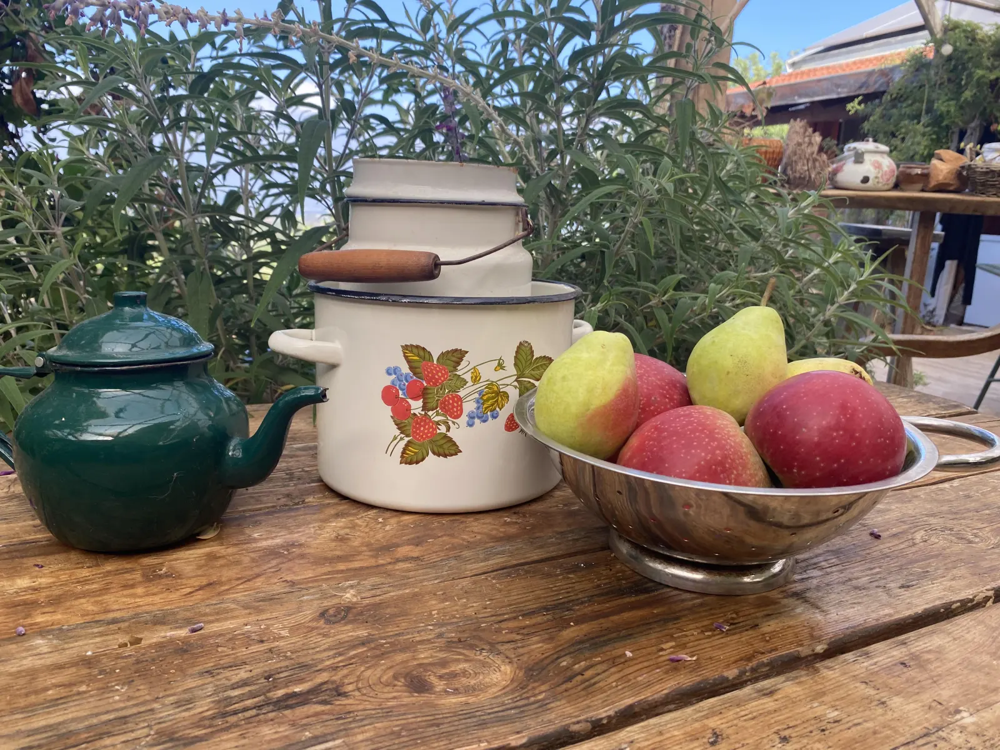
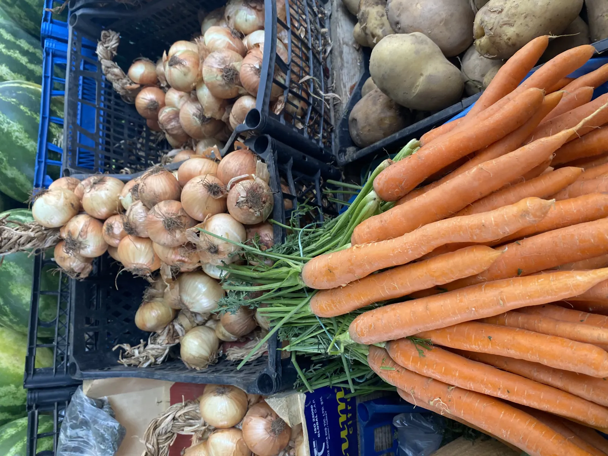
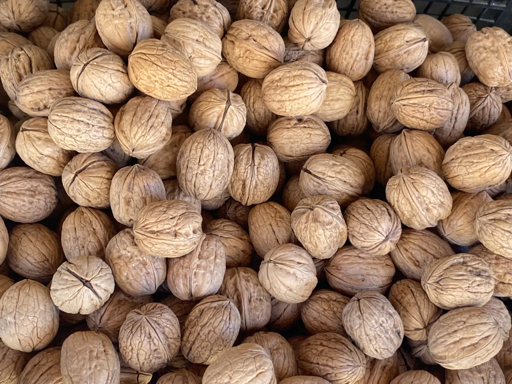

להתבונן
על הבחירות, ההרגלים והקשר האישי שלך לאוכל.
או לראות בכל ארוחה הזדמנות והזמנה למדיטציה?
לפרטים והרשמהקורס עומק מעשי · בישול בתנועה · כליל

האוכל והמזון שאנו אוכלים מלווים את המחשבות שלנו רוב שעות היום. בעידן רווי גירויים, קל להיסחף רחוק מהקשבה פנימית ומדרך אכילה שמזכירה לנו מי אנחנו.
הקורס הוא הזמנה לעצור לרגע ולפגוש את האוכל, את המזון ואת פעולת האכילה מזוויות חדשות - מתוך מקום שקט, סקרן וללא שיפוטיות עצמית.
על הבחירות, ההרגלים והקשר האישי שלך לאוכל.
בטכניקות בישול, טעמים, צבעים ומרקמים חדשים.
דרך פשוטה ומעשית לקחת את ההקשבה הביתה.

היוגה של התזונה מחברת בין עולם היוגה והתזונה, יצירתיות ותנועה - דרך עולמות האיורוודה, הרפואה הסינית ותורת הרמב״ם.

חוויה אמיתית שאין כמותה. גילת העבירה מסע מונחה ומעמיק בנועם, ברוגע ובסבלנות אין קץ.
נהניתי לספוג השראה מהבית הקסום, הגינה והנוף; מאינסוף צירופי טעמים ומרקמים.
השילוב בין העומק, הרוח, נדיבות הלב והמאכלים המגוונים יצר את הקסם.
לא. הקורס מזמין גם מי שמרגישים בבית במטבח וגם מי שרוצים לבנות בו ביטחון ויצירתיות.
לא. אין צורך בניסיון קודם או בתרגול פיזי של יוגה. בקורס לומדים את הפילוסופיה של היוגה של התזונה, בסקרנות ובקצב אישי.
כלים ליצירת מציאות חדשה בקשר עם האוכל ועם פעולת האכילה: נוכחות, מודעות ויכולת בחירה בכל שלב - מההחלטה מה לאכול, דרך הקנייה, ההכנה והבישול, ועד האכילה עצמה. בנוסף מקבלים חוברת אחת הכוללת את כל מתכוני הקורס, וליווי ותמיכה אישיים במהלך הקורס ואחריו, בוואטסאפ ובטלפון.
שלחו הודעה וקבלו את כל הפרטים על הקורס הקרוב.
לפרטים והרשמה בוואטסאפ